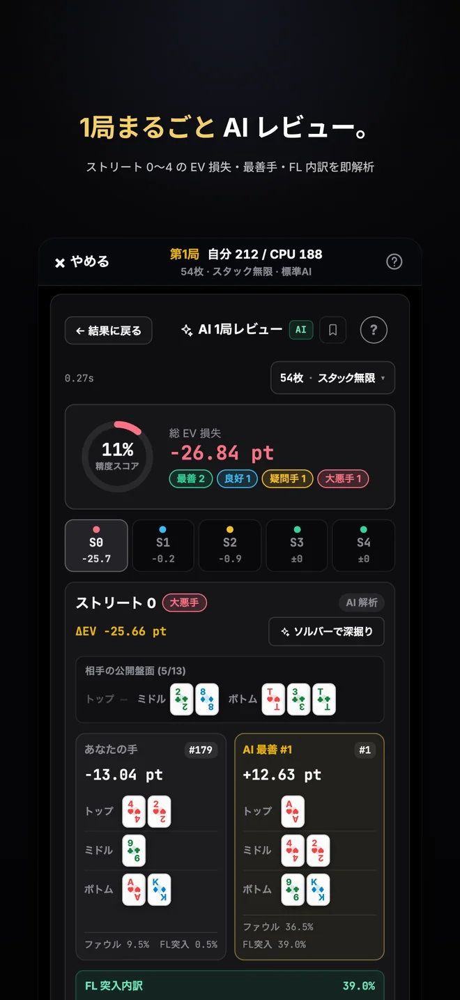

OFC Pineapple を、
勘から「期待値」へ。
初手 S0 から最終 S4 までの平場ソルバー、AI 1局レビュー、実効スタック（50pt〜∞）別の最適解、54枚／52枚（ジョーカーなし）完全対応。すべて iPhone 内でオフライン動作。


あなたの OFC 直感、厳密計算に勝てるか？
実戦から厳選した 3 問をブラウザ上でそのまま解けます。すべて C++20 エンジン＋最新 FL 価値テーブルで検証した期待値（EV）・FL 突入率・ファウル率を即時採点。
実卓向け 5 秒 OFC 点数計算（無料）
26 枚のカードを入力せずに「各段の勝敗・ロイヤリティ・ファウル有無」だけで行ポイント・スクープ（±3）・ロイヤリティ差・次局ファンタジー（14〜17枚）を即座に清算します。
強くなるために必要な道具を、iPhone 1 台に。
タップで画像を拡大できます。全機能がオフラインで動作するため、海外遠征や機内、オフライン卓でもそのまま解析可能。
スタック深さとジョーカー有無で、FL 価値は別物になる。
「スタック無限・54枚」の感覚のまま 50pt 卓や 52 枚（ジョーカーなし）卓を打つと、Trips 特攻で大きく期待値を落とします。アプリ内では 1 タップで卓条件を切替可能。


まずは無料で体験。本格研究には Pro。
毎日の「今日の 1 問」・AI 1局レビュー・平場ソルバー・5秒点数計算はすべて無料で試せます。本格研究向けの Pro プランはサブスクと買い切りプランを用意。
※ 表示価格は日本（JPY）／米国（USD）の基準目安です。実際の請求額は App Store の各地域通貨・為替レートに準じます。サブスクリプションは iOS の「設定」からいつでも解約できます。買い切りプランは自動更新されません。